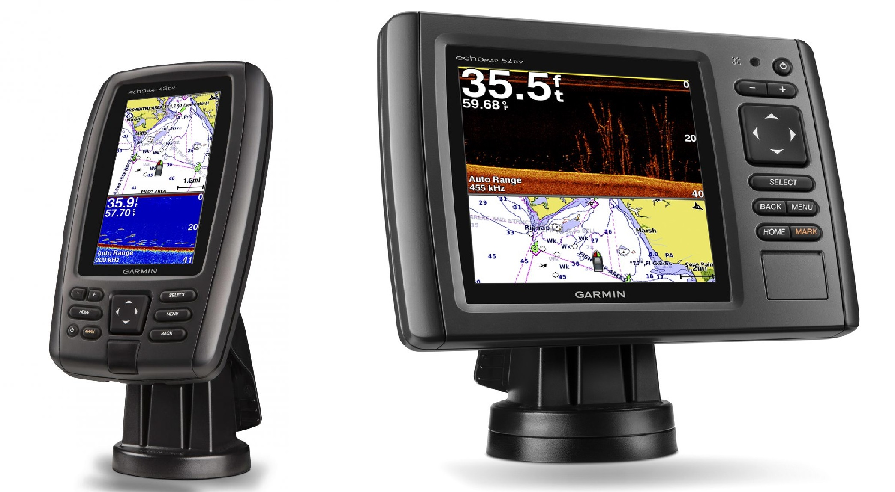
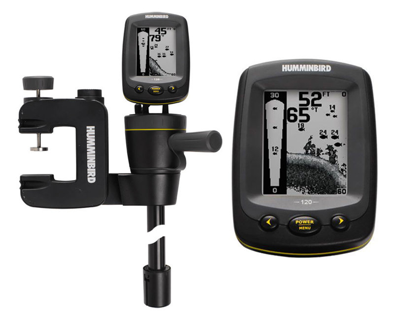
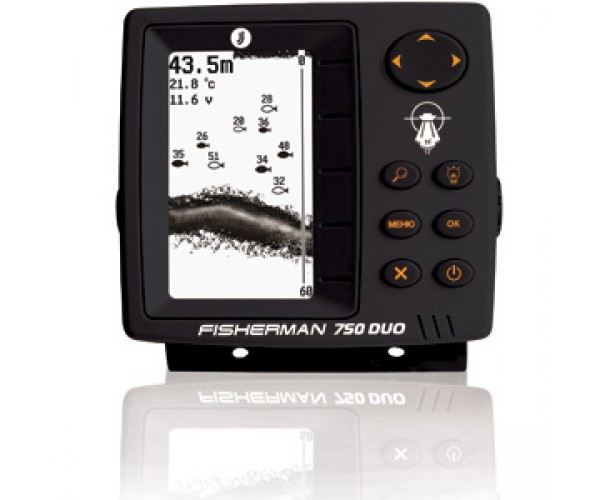
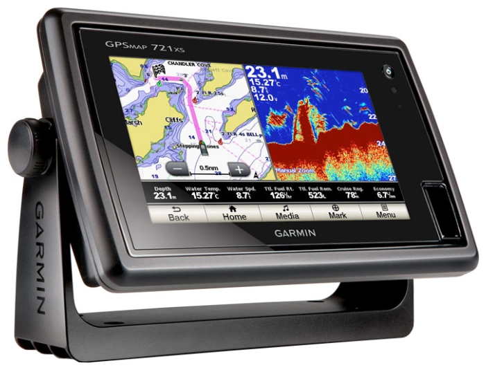

Информация к разделу
Выбор рыбаловного эхолота
Как правильно выбрать эхолот для рыбалки
Любой рыбак рано или поздно задумывается над тем, чтобы приобрести современное специализированное оборудование для ловли рыбы. Одним из самых востребованных приспособлений, значительно упрощающих рыбалку и делающих ее еще приятнее, является эхолот. Он позволяет не только заглянуть в толщу воды, но и достаточно точно узнать о глубине, особенностях рельефа дна, а также об объектах, находящихся в воде (в том числе и о рыбе).
Исходя из получаемых данных, опытному рыболову не составит труда найти подходящее место для наиболее удачной рыбалки. Такой прибор, несомненно, позволит сэкономить драгоценное время и принести немало удовольствия от самого процесса ловли.
Принцип работы приспособления для зондирования толщи воды
Принцип работы эхолота в следующем. Прибором излучается ультразвуковой сигнал в толщу воды. После этот сигнал отражается от поверхности дна, плавающих объектов или рыбы и возвращается обратно. В результате, рыбаку на экран выдаются необходимые данные, которые он уже использует для выбора места и удачной рыбалки.
Большинство моделей выдают следующие данные:
- текущая глубина;
- рельеф дна;
- наличие и глубина расположения рыбы;
- размер рыбы.
С многообразием огромного количества приборов невольно возникает вопрос «как выбрать эхолот для рыбалки правильно?» Для начала следует обратить внимание на следующие характеристики приспособления:
- мощность данного прибора;
- размер и контрастность дисплея;
- чувствительность приёмника;
- стоимость;
- эффективность преобразователя;
- количество лучей для зондирования.
Теперь рассмотрим каждый из этих показателей. Мощность эхолота характеризуется качеством получаемого сигнала. Соответственно, чем выше данный показатель, тем с большей глубиной может работать рыбак, а также более качественно можно будет рассмотреть донную поверхность. Мощность бывает усреднённая и пиковая и измеряется в ваттах.
Для удобства анализа полученной картинки следует выбирать эхолот с большим разрешением экрана, что позволит разделить и лучше рассмотреть близлежащие мелкие объекты. А высокая контрастность позволит видеть выводимые показатели в условиях любой погоды.
Чувствительность приёмника также является не маловажным аспектом в работе прибора. Но эхолот с высокой чувствительностью будет выдавать данные с большим количеством помех, что, соответственно, будет мешать процессу рыбалки. Поэтому лучше выбирать модели с регулируемой чувствительностью.
Эффективность преобразователя выражается в его диапазоне частоты, обуславливающей глубину и ширину сканированной области. В данном случае качество исходящей на экран картинки будет обратно пропорционально глубине сканирования, что также следует учитывать во время выбора прибора. Большинство из них работают на частоте 200 kHz и 50 kHz.
Количество лучей для зондирования выбираются строго под ситуацию. Для отечественной рыбалки вполне подойдёт и однолучевой эхолот. При использовании двулучевого прибора один из его лучей зондирует донную поверхность, а другой расширяет кругозор. Но и в данном случае имеются мёртвые зоны, в отличие от прибора с четырьмя лучами, каждый из которых зондирует свою область под определённым углом.
Эхолоты для рыбалки на лодке
Эхолоты имеют достаточно большую стоимость, соответственно, во время ловли рыбы на лодке, необходимо каждый прибор подбирать под размер лодки, т.к. заходя в очередной манёвр, он может упасть в толщу воды. Достаточно популярными моделями в данном случае являются FB 120x Humminbird, Humminbird 597cxi HD DI Combo и Lowrance HDS. 
Эхолоты для зимней рыбалки
Зимний эхолот лучше выбирать из числа моделей, изготовленных из материалов, выдерживающих достаточно низкие температуры. В данном случае можно будет использовать и модели с лодки, где рекомендуется применять крепёжные изделия типа модели TransMount KZ-150. Также допускается использование как однолучевых, так и двулучевых приборов. Популярные модели в этой области следующие: Elite-4x Ice Machine, Fisherman 600 Ice Edition и тубусные эхолоты для зимней рыбалки.
Зачастую опытные рыбаки применяют беспроводные эхолоты, у которых имеется пометка в названии Wireless. Они оснащены датчиком, который располагается на определённом расстоянии и имеет форму поплавка для размещения в лунке.
Эхолоты для рыбалки с берега
Осуществляя рыбную ловлю с берега можно использовать любой эхолот из вышеперечисленных моделей, поскольку нет четких ограничений по выбору этого прибора. Зачастую профессионалы используют эхолоты фирмы Humminbird.
Выбор по разумной цене
Вышеуказанные приборы можно приобрести в ценовом диапазоне от 700 до 1200 долларов. Но как выбрать эхолот для рыбалки недорогой по цене и хороший по качеству? Такие модели предлагают нам фирмы-производители JJ-Connect Fisherman и Garmin Echo. Цены на эти приспособления находятся в пределах от 70 до 170 долларов, но их достаточное качество работы позволит проводить время на рыбалке с удовольствием в зимнее и летнее время.
Лучшие в своей категории
Для спортивной рыбалки и просто опытных рыбаков, способных позволить себе дорогостоящую технику, специализированные фирмы разработали следующие модели: Humminbird Matrix 3D и Garmin GPSMAP. В таких разработках имеется 3D визуализация, большое количество зондирующих лучей (4-5), а также возможность совместимости с GPS, компьютерами и др.
Рыбакам, имеющим спортивный интерес к ловле, а также тем, кто просто любит с удовольствием провести свободное время у глади водоема с удочкой, просто необходим такой прибор как эхолот.
Даже самым неопытным представителям этого вида спорта при помощи него будет достаточно просто добиться большого улова и тем самым закрепить уверенность в собственных силах, а простой дисплей и лёгкость в управлении всегда позволят сократить время на подготовку.